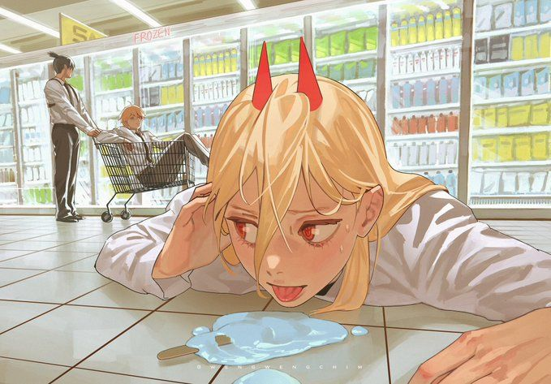

The Blood Fiend

She is my favorite character from the anime, "Chainsaw Man." She is hard to understand at first, but as you keep watching you get this sense of a little sister from her. She's goofy and doesn't know how to read a room, like a little sister. Her character development is very strong and you'll come to love her. She has a strong sense of loyalty which is somehow unexpected of her. She is a strong second lead.